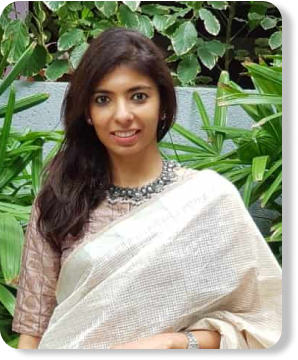

<!DOCTYPE html>
<html lang="en" dir="ltr">

<head>
  <meta charset="utf-8">
  <link rel="stylesheet" href="css/reset.css">
  <link rel="stylesheet" href="css/main.css">
  <title>Revive</title>
</head>

<body>
  
  <h1>MANGALAGIRI SAREES HISTORY</h1>
  <p>The Mangalagiri sarees have a history of more than five centuries. long before the sarees got
    popularised, Mangalagiri was famous for its pilgrimage .The temple of Lord Panakala Narasimha Swamy is located in the centre of the town and is believed to have been there since the Satya Yuga. It is said that under the present temple lies the
    former Lakshmi Narasimha Swamy
    temple, the one in which the main idol was installed by Yudhistira.
    In around 1593, during the rule of Qutub Shahi, heavy taxes were imposed on the handloom
    sarees of this region. As a result of this, the weavers started to move out of this town and started settling in other handloom centres of the state. This affected the weaving activities of this
    town. Later, the succeeding rulers of this region opted for more sympathetic practices and reduced the taxes.</p>
  <a id="jalebi" href="#">KNOW MORE</a>

  <!-- Present Status -->
  <section>
    <div class="kajuKatli">
      <h3>PRESENT STATUS <br> OF MANGALAGIRI SAREES</h3>
      <p>Handloom weaving is the prime occupation of Mangalagiri town. More than half of the population is dependent on the cottage industry for their living. As the global demand is increasing,
        this weave can now be found on kurtas, dupattas and stoles. Nizam-Zari borders are pretty
        popular for sarees. They also make customize designs and motifs with multiple colors for sarees and dresses with the help of chhota dhabi and bada dhabi (motif making machine). Similarly, they use natural dyes now instead of chemical dyes
        because of the increasing demand of
        natural dyes. Most varieties of Mangalagiri sarees are aged back to 200-300 years other than
        some recently developed sarees like ‘muthaka’, ‘silver-jeri’ and nizam border sarees.</p>
      <a id="jalebi" href="#">READ MORE</a>
      

    </div>
  </section>

  <!-- Modern Demands and Changes -->
  <section>
    <div class="kachori">
      
      <h3>MODERN DEMANDS AND CHANGES</h3>
      <p>Getting raw materials for the production is also becoming difficult. Government provides an
        amount only to the owners / heads of these societies and not to the workers who do most of
        the work. 80% of the workers don’t even own a home.
        The brand that sells them cotton as raw material isn’t loyal to them. They keep hiking prices
        and ignore the artisan’s demand for specific ‘yank yarn’. The brand focus more on exporting
        the materials as there is an overseas demand for it. There is a constant hike in the yarn rates
        for 4-5 months now. Recently, yarn was sold in Rs. 200 for 4.5kgs. no price limits setting on
        yarns by either central or state government. This leads to indirect increase in the price of saree
        by Rs (100-150).</p>
      <a id="jalebi" href="#">READ MORE</a>
      <a id="imarti" href="#">SHOP NOW</a>
    </div>
  </section>

  <!-- Speciality of Mangalagiri Sarees -->
  <section>
    <div class="rasgula">
      
      <h4>SPECIALITY OF MANGALAGIRI SAREES</h4>
      <a href="#">KNOW MORE</a>
      
      <h4>HOW TO DISTINGUISH A GENUINE <br>MANGALAGIRI SAREE</h4>
      <p>Basic texture is more compact than that of similar cotton sarees. <br>
        Extra warp design are spread continuously without any gap upto the selvedge of the saree.<br>
        The texture of the saree is relatively soft since there is no starch finish.<br>
        Mangalagiri saree do not have any extra weft designs on the body</p>
      <a id="jalebi" href="#">READ MORE</a>
    </div>
  </section>

  <!-- BLOGS -->
  <section>
    <div class="chenaPoda">
      
      <a href="#">WEAR MANGALAGIRI IN STYLE</a>
      
      <a href="#">THIS SUMMER WEAR MANGALAGIRI TO WORK</a>
      
      <a href="#">10 DIFFERENT WAYS TO DRAPE MANGALAGIRI SAREE</a>
      
      <a href="#">STYLE MANGALAGIRI WITH ME</a>

    </div>
  </section>
  
</body>

</html>
